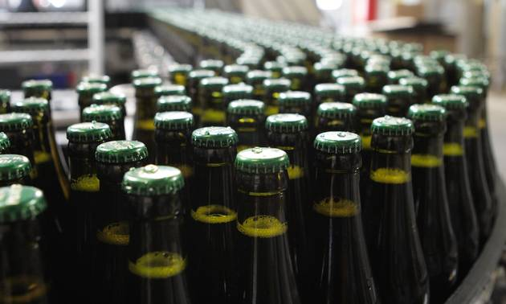
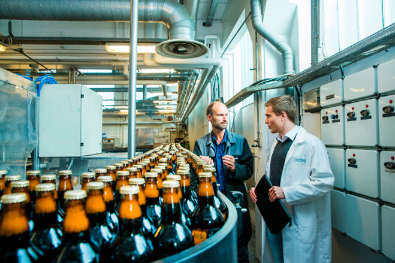

https://finans.dk/erhverv/ECE10227710/fynsk-specialoel-naesten-lige-saa-stor-som-carlsbergs-stjerneoel/?ctxref=ext
Historien bag Dansk Pilsner
Hvor kommer Dansk Pilsner fra?
Selvom Bryggeriet Vestfyen godt kan lyde lille og lokalt, er det ikke tilfældet. Det er danmarks 4. største bryggeri. I 2015 valgte Bryggeriet Vestfyen at kvitte forbruget af miljøbelastende fyringsolie i produktionen af øl og vand. Nu bruges der udelukkende energi fra biobrændsel, der er CO2-neutral. Det er Bryggeriet Vestfyen de første til at gøre i Danmark. Når du drikker en Dansk Pilsner er du altså forsikret om at kvaliteten er i top, og brygget på et solidt grundlag.
Det store bryggeri
Bryggeriet Vestfyen er et selvstændigt bryggeri, som har brygget øl siden 1885. I langt de fleste årrækker har Bryggeriet Vestfyens øl gået under navnet Vestfyen. Det hedder nogle af øllene også idag, men i tilfælde er der undtagelser. Dette gælder bl.a. Dansk Pilsner, samt Jolly Cola og Willemoes.
https://www.food-supply.dk/article/view/219654/bryggeriet_vestfyen_vil_have_styr_pa_sit_energiforbrug
I 1906 bryggede Vestfyens Bryggeri det der var deres første Pilsner. Dette var startskuddet til brygningen af deres mange forskellige pilsnere, heriblandt Dansk Pilsner. Siden dengang er der sket meget, og Vestfyens Bryggeri er idag en af de få selvstændige bryggerier, som er tilbage.